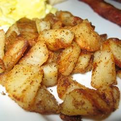

Hash Browns

Description
My Grandma made these simple hash browns nearly every morning when I spent time with her. They take a little planning, but they're better than any others! Serve with your favorite style eggs and breakfast meat!
Ingredients
- 8 large russet potatoes, peeled
- 4 tablespoons butter
- 1 tablespoon salt
- 1 tablespoon ground black pepper
Steps
- In a large saucepan, cover potatoes with water. Bring water to a boil and cook until tender, about 20 minutes. Let cool in refrigerator overnight.
- The next morning, heat butter in a large skillet or frying pan. Shred potatoes and add to pan. Season with salt and pepper. Cook until golden brown on bottom, flip and brown on other side.